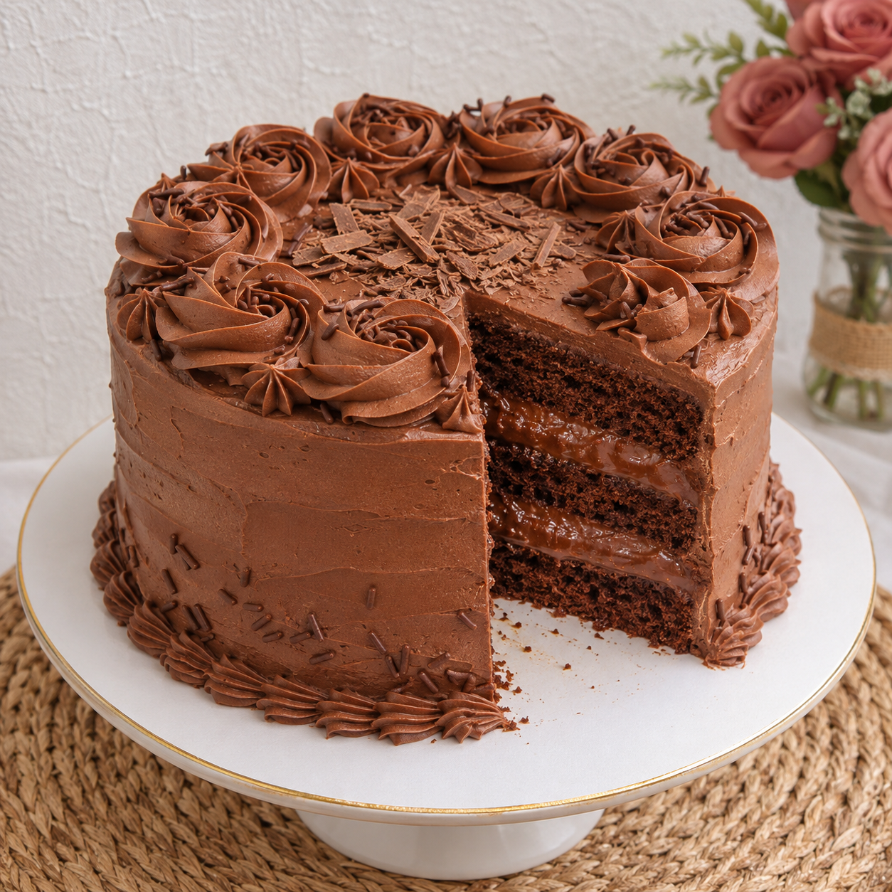
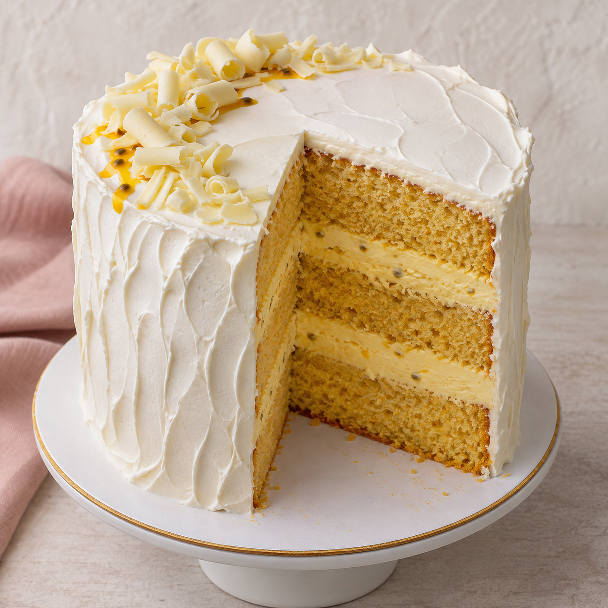
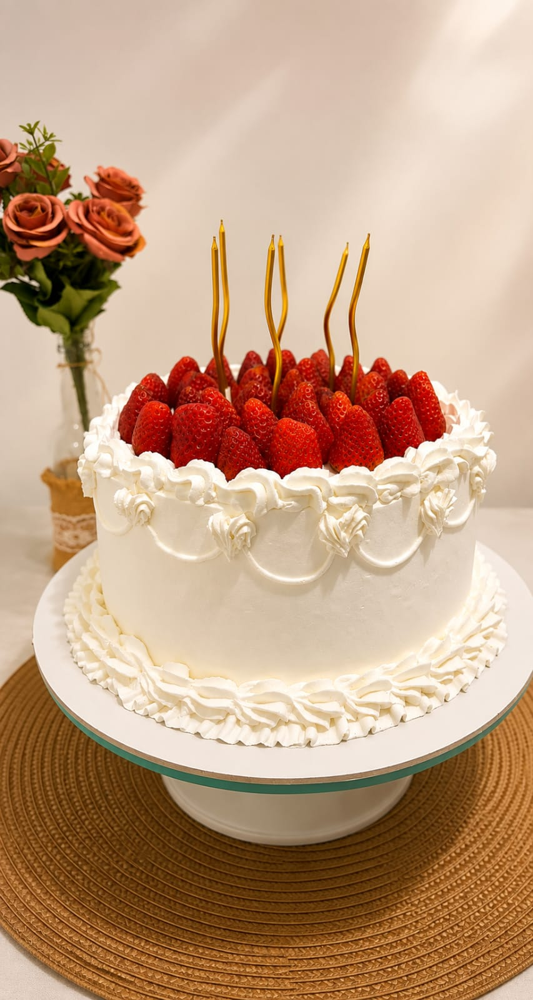
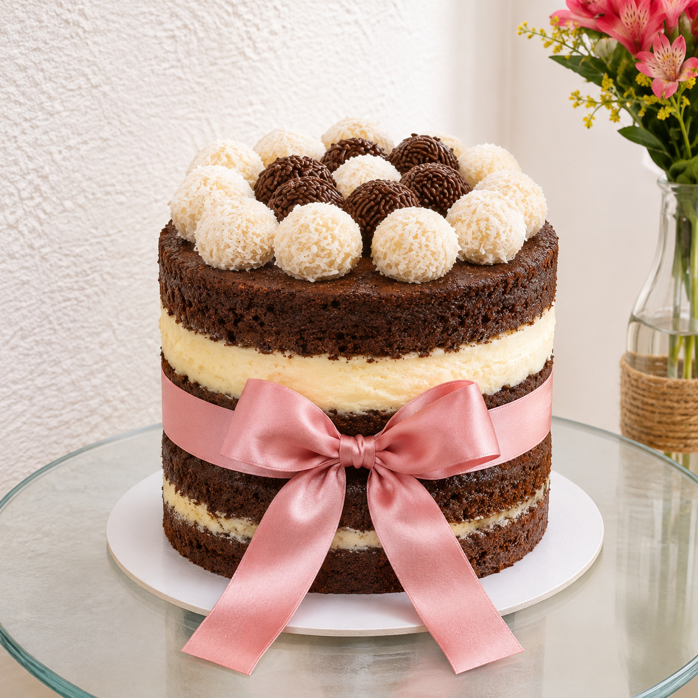
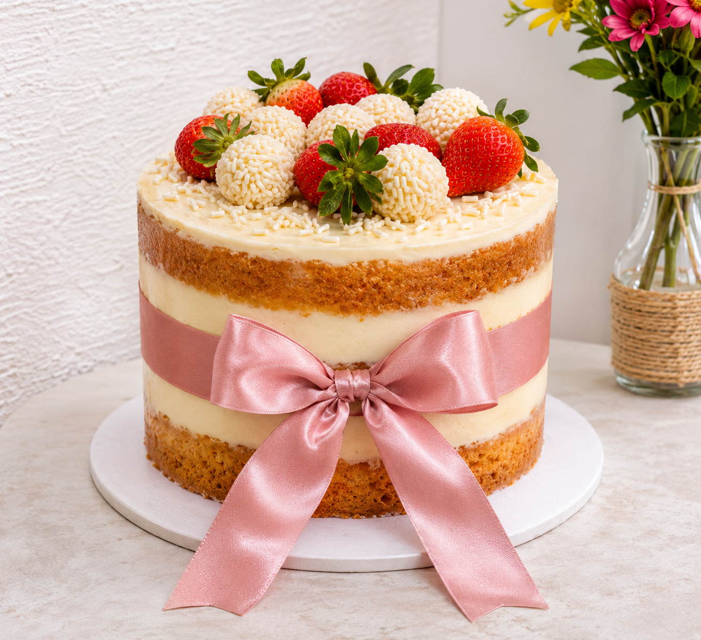

Tradicionais
R$ 90,00 / kg
- Brigadeiro
- Brigadeiro branco
- Dois amores
- Prestígio
- Brigadeiro de leite Ninho
- Doce de leite

Mousses
R$ 90,00 / kg
- Mousse de doce de leite
- Mousse de chocolate
- Mousse de maracujá

Com frutas
R$ 110,00 / kg
- Abacaxi com coco
- Abacaxi com creme branco
- Abacaxi com doce de leite
- Leite Ninho com morangos frescos ou geleia de morango caseira
- Sensação: morango com chocolate
- Leite Ninho com pêssego
- Maracujá
- Maracujá com chocolate

Naked cake
R$ 95,00 / kg
- Brigadeiro
- Brigadeiro branco
- Dois amores
- Prestígio
- Brigadeiro de leite Ninho
- Doce de leite

Naked cake com frutas
R$ 110,00 / kg
- Abacaxi com coco
- Abacaxi com creme branco
- Abacaxi com doce de leite
- Leite Ninho com morangos frescos ou geleia de morango caseira
- Sensação: morango com chocolate
- Leite Ninho com pêssego
- Maracujá
- Maracujá com chocolate
Bentô cake
R$ 50,00 / 500 g
Aro de 10 cm
- Brigadeiro
- Brigadeiro branco
- Dois amores
- Prestígio
- Brigadeiro de leite Ninho
- Doce de leite